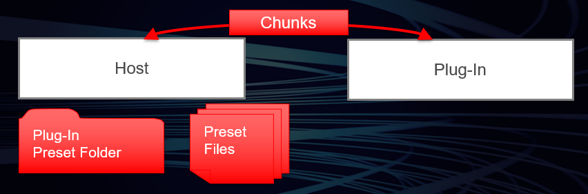

/ VST Home / Technical Documentation
Presets & Program Lists
On this page:
Related pages:
How presets and program lists are handled in VST 3
See VST 3 Locations / Format for preset format definition.
Simple Plug-ins

For a simple plug-in, the data of a preset is nothing more than its state. In this case:
-
It is the job of the host to manage the preset handling for the plug-in.
-
The plug-in itself does not need to provide any means in its GUI for loading presets at all and it does not need to define any program lists.
-
Factory presets must be installed as files at the required location (See Preset Locations).
The host has to provide the GUI for loading and saving preset files. These files contain data that the plug-in has filled into the stream in Steinberg::Vst::IComponent::getState. VST 3 defines dedicated locations in the OS file system (see Preset Locations), so the host does not need to display a file selector dialog. It knows where to search for preset files of a specific plug-in and where to create them. So it can create a pop-up list for selecting a preset or any other GUI of its choice. After loading a preset, the host is responsible to rescan the parameters values (from the controller part). Therefore, the controller must be sure that it gets the correct parameter states when loading a preset (which is done with Steinberg::Vst::IEditController::setComponentState).
See also Communication between the components and Persistence.
Program Lists
If a plug-in uses a large pool of programs that require some kind of caching or that need to be preloaded, using preset files may not be a sufficient choice. In this case, the plug-in can define a program list. For this purpose, the edit controller has to be extended by the interface Steinberg::Vst::IUnitInfo.
-
If the plug-in defines a program list to be used as pool of factory presets, it must not allow the user to change these presets by the means of parameter editing. Instead, it should load the corresponding data into a kind of working memory and store possible modifications as component state. In addition, the user can be allowed to store the modifications as preset file.
-
If the plug-in defines a program list to be used as a pool of user presets that are initially in an 'empty' state, modifications can be applied to the list items directly. This way of using program lists should only be chosen if programs do require a lot of resources that need to be cached in order to achieve fast program changes (good examples for this are sample-based plug-ins).

-
The plug-in can provide GUI for the selection of programs, but it must enable the host to display the list and the selected program as well. The index of the selected program in the list must be exported as program selection parameter. (Steinberg::Vst::ParameterInfo::kIsProgramChange)
-
The plug-in can allow the host to read and write the program data of a list item. To support this, the plug-in must implement the Steinberg::Vst::IProgramListData interface as an extension of the component part.
Structure of Program Lists
All programs are always transmitted as a flat list to the host. But the plug-in can assign a number of attributes to each program of the list. This enables the host to organize and filter them in a very flexible way. Attribute values are queried via Steinberg::Vst::IUnitInfo::getProgramInfo. The possible attribute identifiers are defined in namespace Steinberg::Vst::PresetAttributes. The attribute identifier specifying a program category, for example, is Steinberg::Vst::PresetAttributes::kInstrument. Although the name suggests that it should be used for instruments only, it can be used for any kind of audio plug-in. The value for an instrument category of a program is "Piano" for example. But it is possible to specify a subcategory like "Acoustic Piano" as well. In this case, the strings need to be chained like this:
"Piano|Acoustic Piano". This allows the host to organize presets in a category tree view, for example.
Pitch Names
Pitch names are intended to be used with drum kit programs where the different drum sounds are addressed by note pitches. In order to display the name of the drum instrument assigned to a pitch in a drum editor, for example, the host calls Steinberg::Vst::IUnitInfo::hasProgramPitchNames to determine if pitch names are supported and Steinberg::Vst::IUnitInfo::getProgramPitchName to query the pitch name of a single note.
See also VST 3 Units Multi-timbral Program Lists and check out the pitchnames VST 3 plug-in example.